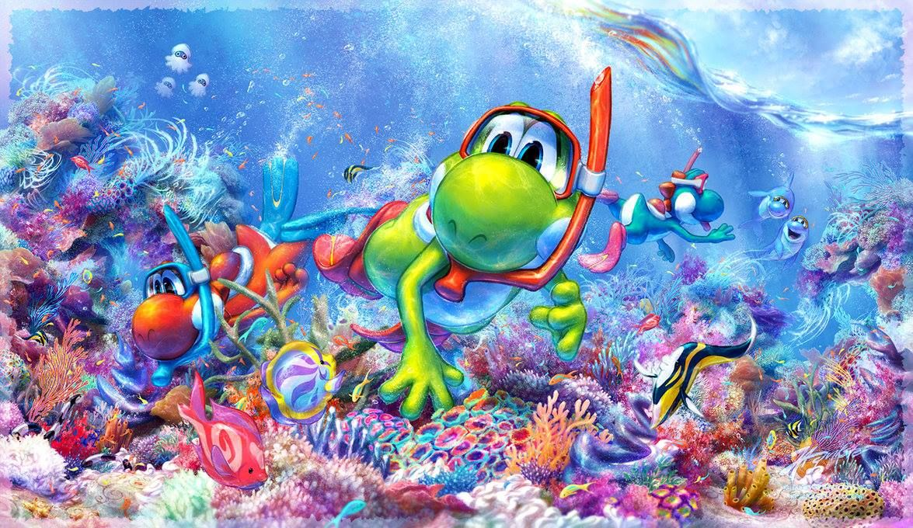

Über Yoshi
Yoshi ist einer der Stars im Pilzkönigreich. Oft steht er Mario bei dessen Abenteuern zur Seite, doch manchmal geht er auch alleine auf Mission!
Yoshi & Seine Freunde
Yoshi´s Eigenschaften
- Yoshi ist kein Dinosaurier, sondern einfach ein Yoshi!
- Wenn er nicht gerade mit Gegnern zu tun hat, isst Yoshi gerne Obst
- Yoshi hat eine lange klebrige Zunge, mit der er fast alles verspeisen kann!
- Yoshi kann seine Gegner auch besiegen, indem er Eier erzeugt und sie auf seine Gegner abfeuert.
- Yoshi ist meist grün, doch es hat auch schon rote, gelbe, blaue, rosafarbene, violette, braune, schwarze, weiße und orange Yoshis gegeben, die manchmal über besondere Fähigkeiten verfügen.
- Yoshi trägt oft andere Charaktere auf seinem Rücken, wie z. B. Baby Mario, Baby Donkey Kong und Baby Peach.
Yoshi´s Freunde
Yoshi hat ein paar coole freunde. Klick auf die Links unten, um mehr über sie zu erfahren